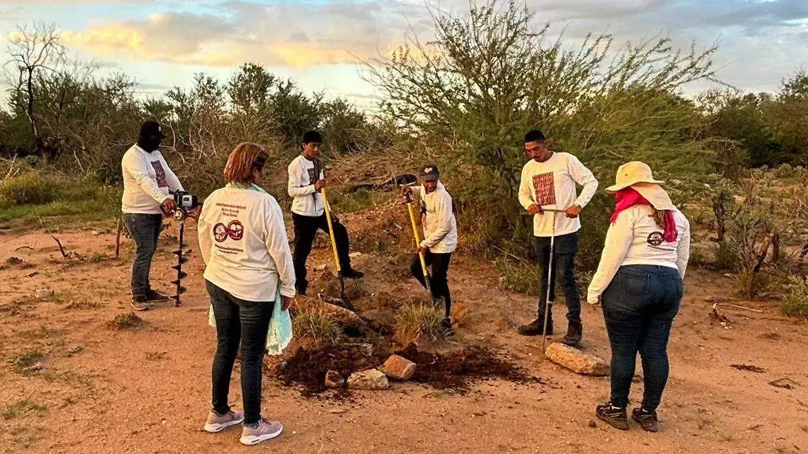

Quiénes son
Madres, padres, hermanas y familiares que se organizan en colectivos para buscar a sus desaparecidos.
En México, miles de familias buscan a una persona desaparecida. Muchas madres lo hacen con sus propias manos, en campo, cuando las autoridades no lo hacen.
Información clara para entender el problema, el trabajo de los colectivos y las formas de ayudar.
Madres, padres, hermanas y familiares que se organizan en colectivos para buscar a sus desaparecidos.
Recorren terrenos, siguen pistas y revisan el suelo con varillas y palas, en búsquedas de campo.
Difundir fichas, donar insumos y exigir que las autoridades cumplan con su obligación de buscar.
Según el Registro Nacional de Personas Desaparecidas y No Localizadas, hay más de 130 mil personas desaparecidas y no localizadas en México (cifra exacta y fecha, más abajo). Detrás de cada número hay alguien que no volvió a casa y una familia que sigue esperando.
Gran parte de la búsqueda en campo la hacen familias, sin recursos suficientes y con riesgo para su seguridad.

Buscar a una persona desaparecida es una obligación del Estado, no un favor a las familias.
Personas desaparecidas y no localizadas en México
132 735
Fuente: Registro Nacional de Personas Desaparecidas y No Localizadas (RNPDNO), corte al 31 de agosto de 2026. La cifra cambia con cada actualización; consúltala en el sitio oficial.
Elige una opción para saber qué hacer.